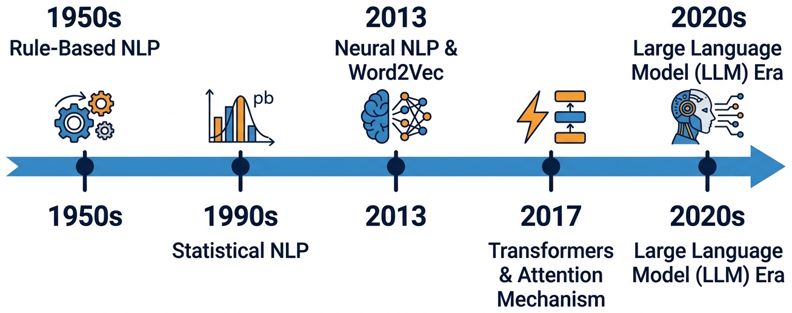
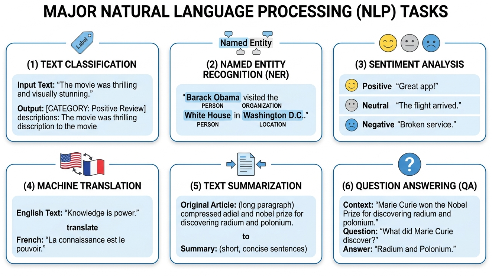
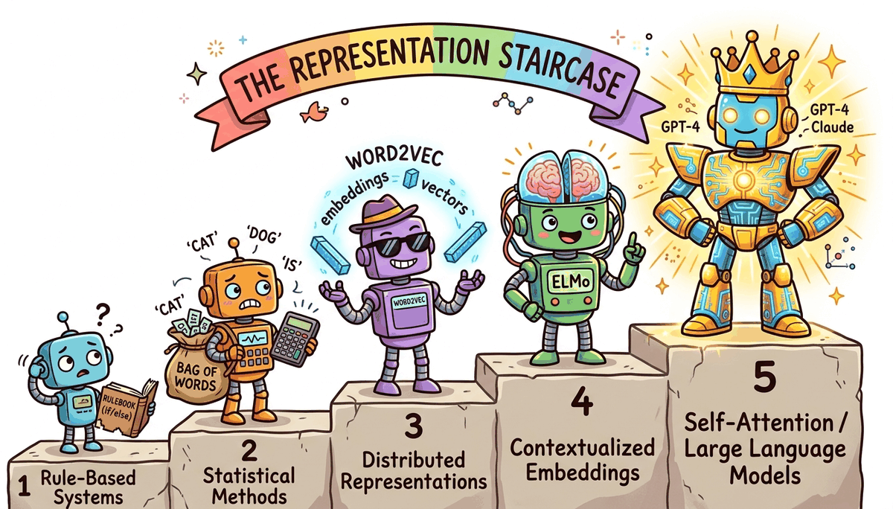

Learning Objectives
After completing this module, you will be able to:
- Explain the evolution of NLP from rule-based systems to modern LLMs and why each transition happened
- Build a complete text preprocessing pipeline using spaCy and NLTK
- Implement and compare Bag-of-Words, TF-IDF, and one-hot encoding, and articulate their limitations
- Explain how Word2Vec, GloVe, and FastText create dense word representations and why they work
- Train a Word2Vec model from scratch and explore word analogies
- Explain why static embeddings fail for polysemous words and how ELMo introduced contextual embeddings
- Articulate the "big picture" of how text representation evolved toward transformers and LLMs
Chapter Roadmap
1.1 Introduction to NLP & the LLM Revolution
Try this thought experiment. Open ChatGPT or Claude and type: "Explain quantum entanglement using only words a five-year-old would understand, but make it scientifically accurate." In two seconds, you'll get a response that is creative, coherent, factually grounded, and tailored to an audience you specified. A decade ago, this was science fiction. Today, it runs on your phone.
How did we get here? That's the story of Natural Language Processing (NLP), the field of AI that teaches machines to understand, generate, and reason about human language. This chapter traces that story from its humble beginnings to the present day, and along the way, you'll build the foundational skills that everything else in this book rests on.
But here's the thing: language is arguably the hardest problem in AI. While computer vision "solved" object recognition to superhuman levels by 2015, and game-playing AI mastered chess and Go, language understanding remained stubbornly difficult until very recently. The reason is that language requires simultaneously handling multiple layers of complexity. It's ambiguous ("I saw her duck" could mean she lowered her head, or that I saw her pet duck), it's context-dependent ("It's cold" means something different in a weather conversation versus a detective story), and it's infinitely composable (you can construct sentences that have never been written before, and humans will understand them instantly).
This entire book is a journey through one central question: How do we represent language in a form that machines can work with? Every breakthrough in NLP, from bag-of-words to transformers to ChatGPT, is fundamentally an answer to this question. The better our representation, the more capable our systems become.
The Four Eras of NLP
NLP has undergone four major paradigm shifts. Understanding why each transition happened is key to understanding where we are today.

Era 1: Rule-Based NLP (1950s–1980s)
The earliest NLP systems were hand-crafted rules. Linguists would write grammars like
S → NP VP (a sentence is a noun phrase followed by a verb phrase) and build
parsers to decompose text. ELIZA (1966), the famous chatbot, used pattern matching:
if the user says "I feel X", respond with "Why do you feel X?"
Why it failed to scale: Language has too many exceptions. You can't write enough rules to cover the full complexity of natural language. Every new domain (legal, medical, informal chat) required starting over from scratch.
Era 2: Statistical NLP (1990s–2000s)
Instead of writing rules, let the machine learn patterns from data. Statistical models like Hidden Markov Models (HMMs) for part-of-speech tagging, Naive Bayes for text classification, and phrase-based statistical machine translation (Google Translate circa 2006) dominated this era.
The representation was still shallow: documents were bags of word counts, and features were hand-engineered (bigrams, POS tags, etc.).
Why it hit a ceiling: Feature engineering was labor-intensive and domain-specific. Models couldn't capture long-range dependencies or deep semantic meaning. "The movie was not bad" was hard to classify correctly because "not" and "bad" are separate features.
Era 3: Neural NLP (2013–2017)
The game changed when Tomas Mikolov published Word2Vec in 2013. Instead of hand-crafted features, neural networks could learn dense vector representations of words directly from data. For the first time, "king" and "queen" were mathematically close in vector space.
Recurrent Neural Networks (RNNs, LSTMs) could process entire sequences word by word, maintaining a "memory" of what came before. Sequence-to-sequence models with attention enabled neural machine translation that beat statistical systems. The key advantage: instead of translating phrase by phrase (the statistical approach), neural models could consider the entire source sentence when generating each target word, producing more fluent and coherent translations.
Why it wasn't enough: RNNs process text sequentially (one word at a time), making them slow to train and bad at capturing very long-range dependencies. A sentence that starts with "The cat, which sat on the mat that was in the house that Jack built, ..." loses information about "The cat" by the time the model reaches the end.
Era 4: The LLM Era (2017–Present)
In 2017, the paper "Attention Is All You Need" introduced the Transformer architecture, which processes all words in parallel using self-attention. This removed the sequential bottleneck of RNNs and enabled training on vastly more data.
BERT (2018) showed that pre-training a transformer on massive text data and then fine-tuning it on specific tasks crushed every benchmark. GPT-2 (2019) showed that language models could generate coherent paragraphs. GPT-3 (2020) revealed that scaling up (175B parameters) led to emergent abilities like in-context learning. ChatGPT (2022) and GPT-4 (2023) brought LLMs to the mainstream.
Each era transition was driven by a representation breakthrough: rules → word counts → dense vectors → contextual vectors → massive pre-trained language models. The quality of the representation determines the ceiling of what NLP systems can do.
Quick Check: Can You Match the Era?
For each approach below, identify which era it belongs to (rule-based, statistical, neural, or LLM):
- A grammar that says
VERB → "eat" | "run" | "sleep" - Computing P(word | previous 2 words) from a large corpus
- Prompting GPT-4 with "Classify this email as spam or not spam"
- Training a 300-dimensional vector for each word using context prediction
Reveal answers
1. Rule-based (hand-written grammar) 2. Statistical (n-gram language model) 3. LLM era (in-context learning) 4. Neural (Word2Vec)
Core NLP Tasks
Before diving deeper, let's map the landscape of problems that NLP solves. These same tasks will reappear throughout the book as we build systems with LLMs.

| Task | Input | Output | Example |
|---|---|---|---|
| Text Classification | Document | Category label | Spam detection, topic categorization |
| Named Entity Recognition | Text | Tagged entities | "Apple [ORG] released iPhone 16 [PRODUCT]" |
| Sentiment Analysis | Text | Polarity score | "Great movie!" → Positive (0.95) |
| Machine Translation | Text in language A | Text in language B | "Hello" → "Bonjour" |
| Summarization | Long document | Short summary | Condensing a 10-page report to 3 sentences |
| Question Answering | Question + context | Answer | "Who wrote Hamlet?" → "Shakespeare" |
Why Language Is Hard
To appreciate why NLP has been one of AI's toughest challenges, consider these phenomena:
- Ambiguity: "I saw her duck" has two completely valid interpretations
- Coreference: "The trophy doesn't fit in the suitcase because it is too big" ... but what is "it"?
- Compositionality: "The movie was not un-enjoyable" involves triple negation that humans parse effortlessly
- World knowledge: "The pen is in the box. The box is in the pen." The second "pen" means a playpen, but you need world knowledge to figure this out
- Pragmatics: "Can you pass the salt?" is technically a yes/no question, but no one answers "Yes" and stops there
Every technique we'll study in this book is an attempt to solve these problems. Bag-of-words ignores word order entirely, Word2Vec captures some semantics but not context, transformers handle long-range context but still struggle with world knowledge. Understanding what each technique can and cannot do is more important than memorizing how it works.
1.2 Text Preprocessing & Classical Representations
Now that we understand the landscape (the four eras, the core tasks, and why language is hard), it's time to get our hands dirty. The first practical question is deceptively simple: how do you turn a sentence into numbers?
A machine learning model can't read text. It operates on vectors of numbers. So the foundational challenge of NLP is converting raw, messy human text (with all its typos, abbreviations, Unicode characters, and grammatical variations) into a numerical representation that a model can process. This section covers the preprocessing pipeline that cleans up the mess, and the earliest (and simplest) approaches to representing the result mathematically.
Text preprocessing is about reducing noise while preserving signal. Every step (lowercasing, removing stop words, stemming) is a deliberate choice to throw away some information in exchange for a more tractable representation. Modern LLMs need far less preprocessing because they've learned to handle raw text, but understanding these techniques is essential for knowing why LLMs were such a breakthrough.
The Text Preprocessing Pipeline
Here's a typical classical NLP preprocessing pipeline, from raw text to features:
Each step in this pipeline makes a deliberate tradeoff. Let's understand them before writing code:
- Unicode normalization: Converts "café" to "cafe" and "naïve" to "naive". Without this, the same word in different Unicode forms would be treated as different tokens.
- Lowercasing: Makes "The", "the", and "THE" identical. We lose the information that a capitalized word might be a proper noun, but we reduce vocabulary size significantly.
- Stop word removal: Words like "the", "is", "at", "which" appear in virtually every document and carry little distinguishing information. Removing them reduces noise. But be careful: "to be or not to be" becomes meaningless without stop words!
- Stemming vs. Lemmatization: Both reduce words to a base form, but differently:
- Stemming (Porter Stemmer): chops off suffixes using rules. "running" → "run", "studies" → "studi", "university" → "univers". Fast but crude; often produces non-words.
- Lemmatization (WordNet): looks up the actual dictionary base form. "running" → "run", "studies" → "study", "better" → "good". Slower but produces real words. This is what we'll use.
Let's implement the full pipeline in Python:
# Complete text preprocessing pipeline import re import unicodedata import nltk from nltk.corpus import stopwords from nltk.stem import WordNetLemmatizer nltk.download('stopwords', quiet=True) nltk.download('wordnet', quiet=True) def preprocess(text: str) -> list[str]: """Full preprocessing pipeline: raw text → clean token list.""" # Step 1: Unicode normalization (e.g., "café" → "cafe") text = unicodedata.normalize('NFKD', text) # Step 2: Lowercase text = text.lower() # Step 3: Remove non-alphabetic characters (keep spaces) text = re.sub(r'[^a-z\s]', '', text) # Step 4: Tokenize (split on whitespace) tokens = text.split() # Step 5: Remove stop words stop_words = set(stopwords.words('english')) tokens = [t for t in tokens if t not in stop_words] # Step 6: Lemmatize (running → run, better → good) lemmatizer = WordNetLemmatizer() tokens = [lemmatizer.lemmatize(t) for t in tokens] return tokens # Example raw = "The cats were running quickly across the beautiful gardens!" print(preprocess(raw)) # Output: ['cat', 'running', 'quickly', 'across', 'beautiful', 'garden']
Here's the same pipeline using spaCy, which is the industry standard for modern NLP preprocessing. Notice how much simpler it is, because spaCy handles tokenization, POS tagging, and lemmatization in one pass:
# Same pipeline using spaCy (modern, production-grade) import spacy # Load the English model (run: python -m spacy download en_core_web_sm) nlp = spacy.load("en_core_web_sm") def preprocess_spacy(text: str) -> list[str]: """Preprocessing with spaCy: tokenize, lemmatize, remove stop words in one pass.""" doc = nlp(text) return [token.lemma_.lower() for token in doc if not token.is_stop and not token.is_punct and token.is_alpha] raw = "The cats were running quickly across the beautiful gardens!" print(preprocess_spacy(raw)) # Output: ['cat', 'run', 'quickly', 'beautiful', 'garden'] # Bonus: spaCy gives you POS tags, entities, and dependencies for free doc = nlp("Apple released the iPhone 16 in San Francisco.") for ent in doc.ents: print(f" {ent.text:20s} → {ent.label_}") # Output: # Apple → ORG # iPhone 16 → PRODUCT (may vary by model) # San Francisco → GPE
Modern LLMs (GPT-4, Claude, Llama) use their own tokenizers and work with raw text. You don't need to remove stop words or stem words: the model handles all of that internally. However, understanding classical preprocessing helps you: (1) work with older ML pipelines, (2) understand what LLMs learned to do automatically, and (3) build hybrid systems where classical NLP handles the cheap/fast work and LLMs handle the complex reasoning.
Bag-of-Words (BoW)
The simplest way to turn text into numbers: count how many times each word appears. Each document becomes a vector where each dimension corresponds to a word in the vocabulary.
Let's walk through the process step by step. Given three documents:
- "The cat sat on the mat"
- "The dog sat on the log"
- "The cat chased the dog"
Step 1: Build the vocabulary by collecting all unique words: {cat, chased, dog, log, mat, on, sat, the}. That's 8 unique words, so every document will become an 8-dimensional vector.
Step 2: For each document, count how many times each vocabulary word appears. The word "the" appears twice in document 1, so its entry is 2. The word "chased" doesn't appear at all, so its entry is 0.
Step 3: The result is a matrix where each row is a document and each column is a word. Notice how sparse it is: most cells are zero. This is the fundamental inefficiency of BoW.
from sklearn.feature_extraction.text import CountVectorizer documents = [ "The cat sat on the mat", "The dog sat on the log", "The cat chased the dog", ] vectorizer = CountVectorizer() X = vectorizer.fit_transform(documents) print("Vocabulary:", vectorizer.get_feature_names_out()) print("Vectors:") print(X.toarray()) # Output: # Vocabulary: ['cat' 'chased' 'dog' 'log' 'mat' 'on' 'sat' 'the'] # Vectors: # [[1 0 0 0 1 1 1 2] ← "The cat sat on the mat" # [0 0 1 1 0 1 1 2] ← "The dog sat on the log" # [1 1 1 0 0 0 0 2]] ← "The cat chased the dog"
N-grams: Partially Solving the Word Order Problem
One partial fix for BoW's word-order blindness is to count n-grams (sequences of n consecutive words) instead of individual words. Bigrams (n=2) like "dog bites" and "bites man" at least capture some local word order:
# Bigrams capture some word order from sklearn.feature_extraction.text import CountVectorizer bigram_vec = CountVectorizer(ngram_range=(1, 2)) # unigrams + bigrams X = bigram_vec.fit_transform(["dog bites man", "man bites dog"]) print("Features:", bigram_vec.get_feature_names_out()) print("Vectors:") print(X.toarray()) # Features: ['bites' 'bites dog' 'bites man' 'dog' 'dog bites' 'man' 'man bites'] # Vectors: # [[1 0 1 1 1 1 0] ← "dog bites man" has "dog bites" and "bites man" # [1 1 0 1 0 1 1]] ← "man bites dog" has "man bites" and "bites dog" # Now the vectors ARE different! But the vocabulary explodes quadratically.

Think of Bag-of-Words as a filing cabinet with 100,000 drawers, one drawer per word in the English language. For each document, you put a tally mark in the drawer for every word that appears. Most drawers are empty (the vector is "sparse"). This tells you which words appeared, but nothing about what they mean.
Word embeddings (coming next) are more like a color mixer with 300 dials. Each dial controls a different "flavor" of meaning. The word "king" might have the "royalty" dial turned up high, the "male" dial up, the "power" dial up, and 297 other dials set to various levels. "Queen" would have a very similar setting, except the "male" dial is turned down and the "female" dial is turned up. This is what a "300-dimensional dense vector" means in practice: 300 numbers, each capturing a different aspect of meaning.
Three fatal flaws of Bag-of-Words:
- No word order: "Dog bites man" and "Man bites dog" have the exact same vector
- No semantics: "Happy" and "joyful" are as far apart as "happy" and "refrigerator". Why? Because BoW treats each word as an independent dimension. There is no mechanism to know that two different words share meaning; the only information is whether a word is present and how often. The dimensions are arbitrary labels, not meaningful axes.
- Massive dimensionality: With a vocabulary of 100,000 words, each document is a 100,000-dimensional vector that's mostly zeros
TF-IDF: Weighting Words by Importance
TF-IDF (Term Frequency–Inverse Document Frequency) improves on raw counts by giving more weight to words that are distinctive for a document. Common words like "the" get downweighted because they appear everywhere; rare but informative words get upweighted.
Where:
- TF(t, d) = how often term t appears in document d
- DF(t) = how many documents contain term t
- N = total number of documents
Worked example: Using our three documents from above. Consider the word "the":
- TF("the", doc1) = 2 (appears twice in "The cat sat on the mat")
- DF("the") = 3 (appears in all three documents)
- IDF = log(3/3) = log(1) = 0 → "the" gets zero weight! It's useless for distinguishing documents.
Now consider the word "chased":
- TF("chased", doc3) = 1
- DF("chased") = 1 (only appears in one document)
- IDF = log(3/1) = log(3) ≈ 1.1 → high weight! "Chased" is distinctive.
This is the core intuition: words that appear everywhere are useless; words that appear in only some documents are informative. TF-IDF automatically discovers this.
from sklearn.feature_extraction.text import TfidfVectorizer vectorizer = TfidfVectorizer() X = vectorizer.fit_transform(documents) print("TF-IDF vectors (rounded):") import numpy as np print(np.round(X.toarray(), 2)) # Notice: "the" gets a LOW weight (appears in every doc) # while "mat", "log", "chased" get HIGH weights (distinctive)
TF-IDF is still used today as the backbone of BM25, the default search algorithm in Elasticsearch, Solr, and most search engines. When you build a RAG system in Module 19, you'll combine TF-IDF-style keyword search with dense vector search. Don't dismiss classical methods. BM25 (a TF-IDF variant) still outperforms dense retrieval on many benchmarks when queries contain rare or specific terms, and it runs orders of magnitude faster because it uses inverted indexes instead of vector similarity search. The best modern RAG systems use both approaches together.
One-Hot Encoding and Its Limitations
The most basic word representation: each word is a vector with a single 1 and all other entries 0. With a vocabulary of 50,000 words, "cat" might be:
# One-hot encoding: see the problem for yourself from sklearn.preprocessing import LabelEncoder, OneHotEncoder import numpy as np words = ["cat", "dog", "fish", "democracy"] label_enc = LabelEncoder() integer_encoded = label_enc.fit_transform(words) onehot_enc = OneHotEncoder(sparse_output=False) onehot = onehot_enc.fit_transform(integer_encoded.reshape(-1, 1)) print("One-hot vectors:") for word, vec in zip(words, onehot): print(f" {word:12s} → {vec}") # Compute distances: every pair is equally far apart! from scipy.spatial.distance import euclidean print(f"\nDistance cat↔dog: {euclidean(onehot[0], onehot[1]):.2f}") print(f"Distance cat↔democracy: {euclidean(onehot[0], onehot[3]):.2f}") # Both print 1.41 (√2) — cat is as "far" from dog as from democracy!
The problem is devastating: every word is equally different from every other word. To see why mathematically, consider the Euclidean distance between any two one-hot vectors. If "cat" = [1,0,0,...] and "dog" = [0,1,0,...], the distance is always √2, regardless of which two words you pick (because each pair differs in exactly two positions). The distance between "cat" and "dog" is identical to the distance between "cat" and "democracy." There's no notion of similarity, no shared meaning, no semantic structure whatsoever.

With BoW/TF-IDF, we CAN: Search for documents by keyword, classify documents by topic (spam vs. not-spam), find "distinctive" words in a corpus, build simple search engines. These are real, valuable capabilities that power production systems today.
What we CANNOT do: Understand that "happy" and "joyful" are related. Distinguish "dog bites man" from "man bites dog." Handle words we've never seen before. Understand a word differently based on its context. Every one of these limitations will be solved, step by step, in the sections that follow.
So here's where we stand: Bag-of-Words and TF-IDF can turn text into numbers, and they're surprisingly effective for tasks like search and simple classification. But they have a fatal flaw: they have no concept of meaning. "Happy" and "joyful" are as unrelated as "happy" and "refrigerator." The vectors are sparse (mostly zeros), high-dimensional (one dimension per word in the entire vocabulary), and semantically blind.
What we need is a representation where similar words are close together, where the geometry of the vector space reflects the meaning of the words. Enter word embeddings.
1.3 Word Embeddings: Word2Vec, GloVe & FastText
In 2013, Tomas Mikolov and colleagues at Google published a paper that would reshape all of NLP. The idea was elegantly simple: instead of defining word representations by hand, learn them from data. The result was Word2Vec: dense vectors where semantically similar words are geometrically close.
"You shall know a word by the company it keeps." J.R. Firth, 1957 (the distributional hypothesis)
This idea (the distributional hypothesis) says that words appearing in similar contexts tend to have similar meanings. Why does this work? Consider: the words "cat" and "dog" both appear near "pet," "veterinarian," "cute," "fed," and "walked." A word you've never seen, like "wug," that also appears near "pet" and "fed" is probably an animal too. Context is a remarkably reliable proxy for meaning. This principle is the foundation of all modern word representations, including the embeddings inside GPT-4 and Claude.
Word2Vec was the "ImageNet moment" for NLP. Before Word2Vec, NLP was mostly a separate field from deep learning. After Word2Vec, the entire field pivoted to neural approaches. It proved that neural networks could capture meaning, and that this meaning was useful for virtually every NLP task.

Think of word embeddings as GPS coordinates in meaning-space. Just as GPS gives every location on Earth a pair of numbers (latitude, longitude), word embeddings give every word a set of numbers (typically 100 to 300 of them) that locate it in "meaning-space." Cities that are geographically close have similar GPS coordinates; words that are semantically similar have similar embedding coordinates. "Cat" and "dog" are neighbors in this space, just as Paris and London are neighbors on a map. And just as you can compute the distance between two cities from their coordinates, you can compute the similarity between two words from their embeddings.
Why 300 dimensions? With only 2 or 3 dimensions, there's not enough room to capture all the nuances of meaning. "Cat" needs to be near "dog" (both animals), near "pet" (domestication), and near "meow" (sound), but far from "economy" and "python." Representing all these relationships simultaneously requires many dimensions. Research has shown that 100 to 300 dimensions is the sweet spot. This was established empirically: Mikolov et al. tested 50, 100, 200, 300, and 600 dimensions on the analogy task and found that accuracy plateaus around 300. Below 100, there aren't enough degrees of freedom to represent all the semantic distinctions. Above 300, you get diminishing returns while increasing memory and compute cost. The GloVe paper confirmed similar findings independently.
Word2Vec: How It Works
Word2Vec comes in two flavors. We'll focus on Skip-gram, which is simpler to understand and more widely used.
The idea: given a center word, predict the surrounding context words. Let's trace through a concrete example to build intuition.
Take the sentence: "the cat sat on the mat" with a window size of 2. The model slides a window across the sentence, and at each position, creates training pairs:
| Center Word | Context Words (window=2) | Training Pairs Generated |
|---|---|---|
| the | cat, sat | (the→cat), (the→sat) |
| cat | the, sat, on | (cat→the), (cat→sat), (cat→on) |
| sat | the, cat, on, the | (sat→the), (sat→cat), (sat→on), (sat→the) |
| on | cat, sat, the, mat | (on→cat), (on→sat), (on→the), (on→mat) |
| ... | ... | ... |
After processing billions of such pairs, words that frequently appear in similar contexts (like "cat" and "dog," which both appear near "the," "sat," "chased") end up with similar vectors. Words that never share context (like "cat" and "economics") end up far apart.

The Architecture (It's Surprisingly Simple)
Skip-gram is a shallow neural network with just one hidden layer:
- Input: One-hot vector for the center word (dimension = vocabulary size V)
- Hidden layer: Multiply by weight matrix W (V × d): this produces a d-dimensional vector. This IS the word embedding.
- Output: Multiply by another matrix W' (d × V), apply softmax: this gives a probability distribution over all words in the vocabulary
After training on billions of words, the rows of the matrix W are the word embeddings. Each row is a 100-300 dimensional vector that captures the "meaning" of a word.
You might wonder: if we just want to know which words appear in similar contexts, why not simply build a co-occurrence matrix (which word appears near which other word) and use that directly? In fact, you can do this, and GloVe (discussed below) takes exactly this approach. The insight of Word2Vec is that a neural network can learn a compressed representation that captures the same information in far fewer dimensions. A co-occurrence matrix for a 100K vocabulary would be 100K x 100K = 10 billion entries. Word2Vec compresses this to 100K x 300 = 30 million numbers, a 300x reduction, while preserving (and even enhancing) the semantic relationships.
Here's a crucial forward connection: every modern LLM starts with an embedding layer that works exactly like Word2Vec. When GPT-4 or Claude processes text, the very first thing it does is convert each token into a dense vector using a learned embedding matrix. The difference is scale: Word2Vec learns 300-dimensional embeddings from a few billion words; models like GPT-3/4 learn embeddings with thousands of dimensions (GPT-3 uses 12,288-dimensional vectors) from trillions of tokens, and then refines them through dozens of transformer layers. But the fundamental idea (learned dense vector per token) is identical. You're learning the building block of all modern AI right now.
Skip-gram: Given center word → predict context words. Works better for rare words.
CBOW (Continuous Bag of Words): Given context words → predict center word. Faster to train.
In practice, Skip-gram with negative sampling is the most common choice.
Negative Sampling: Making Training Tractable
The naive softmax over a vocabulary of 100,000+ words is extremely expensive. Negative sampling simplifies this: instead of updating all 100K output weights, we only update the weights for the correct context word (positive) and a small random sample of "negative" words (typically 5-20).
The training objective becomes:
In plain English: make the dot product between the center word and the real context word large (positive), and make the dot product with random words small (negative).

Imagine a student learning vocabulary by flashcards. The "positive" training is straightforward: see the word "sat," learn that it goes with "cat" and "mat." But negative sampling adds something clever: the student also sees random wrong pairings ("sat" with "democracy," "sat" with "penguin") and learns that these don't go together. This contrastive signal (what goes together vs. what doesn't) is surprisingly powerful. The model doesn't just learn that "cat" is related to "sat"; it learns that "cat" is more related to "sat" than random words are. This relative positioning is what creates the rich geometric structure of the embedding space.
Training Word2Vec from Scratch
Let's train a Word2Vec model using Gensim on a real corpus:
from gensim.models import Word2Vec from gensim.utils import simple_preprocess # Sample corpus (in practice, use millions of sentences) corpus = [ "the king ruled the kingdom with wisdom", "the queen ruled the kingdom with grace", "the prince and princess lived in the castle", "the man worked in the field every day", "the woman worked in the market every day", "a dog chased a cat across the garden", "the cat sat on the mat near the dog", "paris is the capital of france", "berlin is the capital of germany", "tokyo is the capital of japan", ] # Tokenize sentences = [simple_preprocess(s) for s in corpus] # Train Word2Vec (Skip-gram with negative sampling) model = Word2Vec( sentences, vector_size=50, # embedding dimensions window=3, # context window size min_count=1, # minimum word frequency sg=1, # 1 = Skip-gram, 0 = CBOW negative=5, # number of negative samples epochs=100, # training epochs ) # Explore the learned embeddings print("Vector for 'king':", model.wv['king'][:5], "...") # first 5 dims print("Most similar to 'king':", model.wv.most_similar('king', topn=3)) print("Most similar to 'cat':", model.wv.most_similar('cat', topn=3)) # Peek inside: the embedding matrix is just a numpy array print(f"\nEmbedding matrix shape: {model.wv.vectors.shape}") # Output: (num_words, 50) — each row is one word's vector # What do the dimensions "mean"? # Each dimension doesn't have a human-readable label, but we can # look at which words score highest/lowest on a given dimension: dim = 7 # pick an arbitrary dimension scores = {word: model.wv[word][dim] for word in model.wv.index_to_key} sorted_words = sorted(scores.items(), key=lambda x: x[1]) print(f"\nDimension {dim} — lowest:", sorted_words[:3]) print(f"Dimension {dim} — highest:", sorted_words[-3:])
Measuring Similarity: Cosine Similarity
Before we explore analogies, we need to understand how similarity is measured between word vectors. The standard metric is cosine similarity: the cosine of the angle between two vectors.
The result ranges from -1 (opposite directions) to +1 (identical direction). Two words with cosine similarity of 0.85 are very similar; 0.1 means nearly unrelated. Crucially, cosine similarity ignores vector magnitude: it only cares about direction. This means a word that appears 1,000 times and a word that appears 10 times can still be "similar" if they point in the same direction in embedding space.
# Measuring cosine similarity between word vectors from numpy import dot from numpy.linalg import norm def cosine_sim(a, b): return dot(a, b) / (norm(a) * norm(b)) # Using pre-trained Word2Vec vectors print(cosine_sim(wv['cat'], wv['dog'])) # ~0.76 (both are pets) print(cosine_sim(wv['cat'], wv['king'])) # ~0.13 (unrelated) print(cosine_sim(wv['king'], wv['queen'])) # ~0.65 (both are royalty) print(cosine_sim(wv['paris'], wv['france'])) # ~0.77 (capital-country)
Euclidean distance measures the straight-line distance between two points. The problem: high-frequency words tend to have larger vector magnitudes, which inflates Euclidean distances even between semantically similar words. Cosine similarity normalizes this away by focusing purely on angle/direction. This is why virtually all embedding-based systems use cosine similarity: and why you'll see it again in vector databases (Module 18) and RAG systems (Module 19).
The Magic of Word Analogies
The most striking property of word embeddings is that they capture relationships as vector arithmetic:

# Word analogy: king - man + woman = ? # (Using pre-trained vectors for reliable results) import gensim.downloader as api # Download pre-trained Word2Vec (trained on Google News, 3M words) wv = api.load('word2vec-google-news-300') # The famous analogy result = wv.most_similar(positive=['king', 'woman'], negative=['man'], topn=1) print(result) # [('queen', 0.7118)] # More analogies print(wv.most_similar(positive=['paris', 'germany'], negative=['france'], topn=1)) # [('berlin', 0.7327)] Paris is to France as Berlin is to Germany print(wv.most_similar(positive=['walking', 'swam'], negative=['swimming'], topn=1)) # [('walked', 0.7458)] captures verb tense relationships too!
The analogy "king − man + woman = queen" works because the training process creates a linear structure in the embedding space. The direction from "man" to "woman" encodes the concept of "gender," and this same direction applies to other word pairs. Similarly, there's a "capital-of" direction, a "past-tense" direction, and hundreds of other semantic and syntactic relationships: all encoded as linear directions in a high-dimensional space. This is why word embeddings are so powerful: complex semantic relationships become simple geometry.
GloVe: Global Vectors for Word Representation
GloVe (Pennington et al., 2014, Stanford) takes a fundamentally different approach from Word2Vec. Instead of learning from individual (center, context) pairs one at a time, GloVe first builds a global co-occurrence matrix: a giant table counting how often every word appears near every other word across the entire corpus: and then factorizes this matrix into low-dimensional vectors.
Think of it this way: Word2Vec learns by reading one sentence at a time (local context). GloVe first compiles all the statistics, then learns from the complete picture (global statistics). Neither approach is strictly better: they tend to produce similar-quality embeddings, but the mathematical foundations are quite different.
A tiny co-occurrence matrix (window=1, from a small corpus):
| the | cat | sat | on | mat | dog | |
|---|---|---|---|---|---|---|
| the | 0 | 5 | 0 | 0 | 3 | 4 |
| cat | 5 | 0 | 6 | 1 | 0 | 2 |
| sat | 0 | 6 | 0 | 7 | 0 | 5 |
| on | 0 | 1 | 7 | 0 | 4 | 1 |
| mat | 3 | 0 | 0 | 4 | 0 | 0 |
| dog | 4 | 2 | 5 | 1 | 0 | 0 |
GloVe trains word vectors so that: wi · wj ≈ log(Xij), where Xij is the co-occurrence count. The vectors are learned by minimizing the difference between the dot product and the log count across all word pairs.
The real power of GloVe comes from the insight that ratios of co-occurrence probabilities encode meaning:
| P(w | ice) | P(w | steam) | Ratio | |
|---|---|---|---|
| solid | high | low | >> 1 (related to ice, not steam) |
| gas | low | high | << 1 (related to steam, not ice) |
| water | high | high | ≈ 1 (related to both) |
| fashion | low | low | ≈ 1 (related to neither) |
GloVe is trained to make the dot product of two word vectors approximate the log of their co-occurrence count. In practice, GloVe and Word2Vec produce similar-quality embeddings on most benchmarks (both score around 70-75% on the word analogy task with 300 dimensions). The theoretical difference (local prediction vs. global factorization) matters less than the training data size and quality. Levy and Goldberg (2014) showed that, mathematically, Word2Vec with negative sampling is implicitly factorizing a co-occurrence matrix too, which explains why the two approaches converge to similar results.
# Loading pre-trained GloVe vectors import gensim.downloader as api # Download GloVe (trained on Wikipedia + Gigaword, 400K vocab, 100d) glove = api.load('glove-wiki-gigaword-100') # Same interface as Word2Vec print("GloVe similarity cat/dog:", glove.similarity('cat', 'dog')) print("GloVe analogy king-man+woman:", glove.most_similar(positive=['king', 'woman'], negative=['man'], topn=1)) # Compare GloVe vs Word2Vec on the same query print("\nWord2Vec 'king' neighbors:", [w for w, _ in wv.most_similar('king', topn=5)]) print("GloVe 'king' neighbors:", [w for w, _ in glove.most_similar('king', topn=5)]) # Results are similar but not identical — different training data and methods
FastText: Subword Embeddings
FastText (Facebook/Meta, 2016) extends Word2Vec with a critical improvement: it represents
each word as a bag of character n-grams. The word "running" with n=3 becomes:
<ru, run, unn, nni, nin, ing, ng>
Why this matters:
- Handles unseen words: Even if "unfriend" never appeared in training data, FastText can compose its vector from subwords like "un-", "friend", "-end" etc.
- Morphologically rich languages: Turkish, Finnish, Arabic: where a single word can have many inflected forms: benefit enormously from subword sharing.
- Typos and misspellings: "runnng" is still close to "running" because they share most subword n-grams.
# FastText handles out-of-vocabulary words from gensim.models import FastText # Train on same corpus ft_model = FastText( sentences, vector_size=50, window=3, min_count=1, sg=1, epochs=100, ) # FastText can produce vectors for UNSEEN words! print("Vector for 'kingdoms' (never in training data):") print(ft_model.wv['kingdoms'][:5]) # Works! Uses subword info from 'kingdom' # Word2Vec would crash: KeyError: "word 'kingdoms' not in vocabulary"
Comparing the Three Approaches
Let's put Word2Vec, GloVe, and FastText side by side:
| Property | Word2Vec | GloVe | FastText |
|---|---|---|---|
| Training approach | Predict context from center word (local) | Factorize co-occurrence matrix (global) | Same as Word2Vec but with subwords |
| Handles unseen words? | No: crashes on OOV words | No: crashes on OOV words | Yes: composes from subword n-grams |
| Handles morphology? | No: "run"/"running"/"ran" are unrelated | No | Yes: shared subwords connect inflections |
| Training speed | Fast (negative sampling) | Fast (matrix operations) | Slower (more parameters per word) |
| Pre-trained models | Google News (3M words, 300d) | Wikipedia+Gigaword (400K words, 300d) | Wikipedia (2M words, 300d) |
| Best for | General English NLP | General English NLP | Morphologically rich languages, noisy text |
| Context-aware? | None of them: all produce static, context-independent vectors | ||
Despite their differences, Word2Vec, GloVe, and FastText all produce one vector per word. This is their shared fatal flaw: and the reason we needed ELMo, BERT, and transformers. The word "bank" gets the same vector whether it appears next to "river" or "account." Keep this limitation in mind as we transition to Section 1.4.
Visualizing Embeddings
High-dimensional embeddings can be projected to 2D for visualization using t-SNE (preserves local structure) or UMAP (preserves both local and global structure, and is much faster).
from sklearn.manifold import TSNE import matplotlib.pyplot as plt # Get vectors for a subset of words words = ['king', 'queen', 'man', 'woman', 'prince', 'princess', 'cat', 'dog', 'paris', 'france', 'berlin', 'germany', 'tokyo', 'japan'] # Using pre-trained vectors vectors = [wv[w] for w in words] # Project to 2D with t-SNE tsne = TSNE(n_components=2, random_state=42, perplexity=5) vectors_2d = tsne.fit_transform(vectors) # Plot plt.figure(figsize=(10, 8)) for i, word in enumerate(words): plt.scatter(vectors_2d[i, 0], vectors_2d[i, 1]) plt.annotate(word, (vectors_2d[i, 0]+0.5, vectors_2d[i, 1]+0.5), fontsize=12) plt.title("Word Embeddings Projected to 2D with t-SNE") plt.show()
For a more precise view, compute a pairwise similarity matrix as a heatmap:
import seaborn as sns import numpy as np words = ['king', 'queen', 'man', 'woman', 'cat', 'dog', 'paris', 'france'] vectors = np.array([wv[w] for w in words]) # Compute cosine similarity matrix from sklearn.metrics.pairwise import cosine_similarity sim_matrix = cosine_similarity(vectors) # Plot heatmap plt.figure(figsize=(8, 6)) sns.heatmap(sim_matrix, xticklabels=words, yticklabels=words, annot=True, fmt=".2f", cmap="RdYlGn", vmin=-0.2, vmax=1) plt.title("Word Similarity Matrix (Cosine Similarity)") plt.tight_layout() plt.show() # You'll see bright blocks where royalty words cluster together, # and where animals cluster together, confirming the embedding structure
t-SNE and UMAP projections are lossy: they compress 300 dimensions into 2. Distances in the 2D plot don't always reflect true distances in the original space. Use visualizations for intuition-building, not for drawing precise conclusions about similarity.
Section 1.3 Key Takeaways
- The distributional hypothesis works: words in similar contexts get similar vectors, and this captures real semantic relationships.
- Embeddings encode relationships as geometry: king:queen = man:woman is a vector arithmetic operation, not magic.
- 300 dimensions is the empirical sweet spot: enough capacity for rich semantics, not so much that it overfits.
- Word2Vec, GloVe, and FastText are complementary: same idea (dense vectors from context), different algorithms, similar results.
- The fatal flaw is shared: one vector per word, regardless of context. This is what Section 1.4 solves.
1.4 Contextual Embeddings: ELMo & the Path to Transformers
Word2Vec, GloVe, and FastText share a fundamental limitation: each word gets exactly one vector, regardless of context. But language is deeply contextual.
The Polysemy Problem

Consider the word "bank":
- "I deposited money at the bank." → financial institution
- "We sat on the river bank." → edge of a river
- "Don't bank on it." → to rely on
With Word2Vec, all three uses map to the same vector: a compromise that captures none of the meanings well. This is called the polysemy problem.

Quick Check: Polysemy Spotting
How many different meanings does the word "run" have in these sentences? Would Word2Vec give them different or identical vectors?
- "I went for a run this morning." (exercise)
- "There was a run on the bank." (financial panic)
- "She has a run in her stockings." (tear in fabric)
- "The program takes a long time to run." (execute)
Reveal answer
Four completely different meanings, but Word2Vec assigns one single vector for all of them. That vector would be a blurry average of all four meanings, capturing none of them well. This is exactly the problem contextual embeddings solve.
ELMo: Embeddings from Language Models (2018)
ELMo (Peters et al., 2018) was the first widely successful contextual embedding model. The key idea: run the entire sentence through a deep bidirectional LSTM, and use the hidden states as word representations. Since the LSTM has seen the whole sentence, each word's representation is influenced by its context.
How it works:
- Train a bidirectional language model (forward LSTM + backward LSTM) on a large corpus
- For each word in a sentence, extract hidden states from all layers
- The ELMo embedding is a learned weighted combination of all layer representations
The breakthrough: "bank" in "river bank" now gets a different vector than "bank" in "bank account", because the LSTM hidden states are conditioned on the entire sentence.
Why Different Layers Capture Different Information
A remarkable finding from the ELMo paper: different layers of the LSTM capture different types of linguistic information:
- Layer 0 (token embeddings): Captures basic word identity and morphological features: similar to Word2Vec. "Running" is close to "runner" and "runs."
- Layer 1 (first LSTM): Captures syntactic information: part of speech, grammatical role. The model has learned whether a word is a noun, verb, or adjective from context.
- Layer 2 (second LSTM): Captures semantic information: word sense disambiguation, topical context. This is the layer that distinguishes "river bank" from "bank account."
This is why ELMo uses a weighted combination of all layers (the α weights in the diagram above): different downstream tasks benefit from different layers. A POS tagger might weight Layer 1 heavily, while a sentiment classifier might rely more on Layer 2. The weights are learned during fine-tuning for each specific task.
ELMo improved the state of the art on every single NLP benchmark it was tested on: question answering, sentiment analysis, NER, coreference resolution, and more. The gains were typically 3-10% absolute improvement, which was enormous by the standards of 2018. This proved definitively that contextual representations were the future, and set the stage for BERT just six months later.
ELMo introduced what would become the dominant paradigm in NLP: pre-train a model on a large unlabeled corpus (learning general language understanding), then fine-tune or use the representations for specific tasks. This is exactly what BERT, GPT, and all modern LLMs do: just at a much larger scale.
Contextual Embeddings in Code
While ELMo itself is rarely used directly today (BERT and transformers have superseded it), we can demonstrate the concept of contextual embeddings using Hugging Face Transformers, which makes it easy to extract hidden states from any model:
# Demonstrating contextual embeddings: same word, different vectors from transformers import AutoTokenizer, AutoModel import torch from scipy.spatial.distance import cosine # Load a BERT model (the modern successor to ELMo) tokenizer = AutoTokenizer.from_pretrained("bert-base-uncased") model = AutoModel.from_pretrained("bert-base-uncased") def get_word_embedding(sentence, word): """Extract the contextual embedding for a specific word in a sentence.""" inputs = tokenizer(sentence, return_tensors="pt") with torch.no_grad(): outputs = model(**inputs) # Find the token position for our word tokens = tokenizer.tokenize(sentence) word_idx = tokens.index(word) + 1 # +1 for [CLS] token # Return the hidden state at that position return outputs.last_hidden_state[0, word_idx].numpy() # "bank" in two different contexts bank_river = get_word_embedding("I sat by the river bank", "bank") bank_money = get_word_embedding("I went to the bank to deposit money", "bank") # Measure how different the two "bank" vectors are distance = cosine(bank_river, bank_money) print(f"Cosine distance between 'bank' in different contexts: {distance:.3f}") # Output: ~0.35 — substantially different vectors for the same word! # Compare: "bank" (river) is closer to "shore" than to "bank" (money) shore = get_word_embedding("We walked along the shore", "shore") print(f"Distance bank(river) ↔ shore: {cosine(bank_river, shore):.3f}") print(f"Distance bank(river) ↔ bank(money): {cosine(bank_river, bank_money):.3f}") # bank(river) is CLOSER to "shore" than to bank(money)! # This is exactly what contextual embeddings solve.
ELMo (2018) proved the concept, but BERT (2018, released just months later) does the same thing better and faster using transformers instead of LSTMs. Both produce contextual embeddings; the code above works identically with either. We use BERT here because it's readily available via Hugging Face and is the tool you'd actually use in practice. The concept (same word gets different vectors in different contexts) is ELMo's contribution; the implementation is modern.
From ELMo to Transformers: What Changed
| Property | Word2Vec / GloVe | ELMo | BERT / GPT (next modules) |
|---|---|---|---|
| Context-aware? | No (static) | Yes (bi-LSTM) | Yes (self-attention) |
| Pre-trained? | Yes | Yes | Yes (much larger scale) |
| Architecture | Shallow network | Deep bi-LSTM | Transformer |
| Handles polysemy? | No | Yes | Yes (better) |
| Parallelizable? | N/A | No (sequential) | Yes (all at once!) |
| Long-range context? | Window only | Limited by LSTM memory | Full sequence via attention |
The key limitation of ELMo was its reliance on LSTMs, which process text sequentially (one word at a time). This made training slow and limited the model's ability to capture very long-range dependencies. The Transformer architecture (Module 4) solves this by processing all words simultaneously using self-attention.
Summary: The Representation Journey

This module traced the evolution of how we represent text for machines. Each step solved a problem that the previous approach couldn't handle:
The entire history of NLP can be read as a quest for better representations of meaning. Each breakthrough, from TF-IDF to Word2Vec to ELMo to Transformers, made the representation denser (fewer dimensions, more information per number), more contextual (same word, different meaning in different contexts), and more general (works across tasks without task-specific engineering). Understanding this trajectory is the key to understanding where the field is heading next.
What's Next
In Module 2, we'll explore tokenization, the critical first step that determines how text is broken into pieces before being fed to any model. You'll learn the BPE algorithm that powers GPT-4 and Llama, and understand why tokenizer choice affects everything from model quality to API cost.
In Module 3, we'll dive deep into attention, the mechanism that solved the sequential bottleneck of RNNs and enabled the Transformer revolution.
And in Module 4, we'll build a complete Transformer from scratch in PyTorch, the architecture that underpins every model we'll work with for the rest of the book.
What You Built in This Chapter
- A text preprocessing pipeline in both NLTK and spaCy
- Bag-of-Words and TF-IDF vectorizers with sklearn
- A Word2Vec model trained from scratch with Gensim
- Cosine similarity computations and word analogy queries
- A FastText model that handles out-of-vocabulary words
- GloVe vectors loaded and compared with Word2Vec
- A similarity heatmap and t-SNE visualization
- Contextual embeddings extracted from BERT, proving that "bank" gets different vectors in different contexts
You now have hands-on experience with every major text representation technique from the past 30 years. Not bad for one chapter.
Exercises & Self-Check Questions
How to use these exercises: The conceptual questions test your understanding of the why behind each technique. Try answering them in your own words before moving on. The coding exercises are hands-on challenges you should run in a Jupyter notebook. Start with the ones that match your current comfort level.
Conceptual Questions
- Representation evolution: In your own words, explain why the transition from sparse vectors (BoW) to dense vectors (Word2Vec) was such a big deal. What specific problems did it solve, and what new capabilities did it unlock?
- The distributional hypothesis: The phrase "you shall know a word by the company it keeps" is the foundation of Word2Vec. Can you think of cases where this assumption breaks down? (Hint: think about antonyms. "Hot" and "cold" appear in very similar contexts...)
- Static vs. contextual: Give three sentences where the word "play" means different things. Explain why Word2Vec would struggle with these but ELMo would handle them well.
- Why pre-train? ELMo was pre-trained on a large corpus, then used for specific tasks. Why is this better than training a model from scratch for each task? What does the pre-training capture that task-specific training would miss?
- Trade-offs: A colleague argues "TF-IDF is obsolete: just use embeddings for everything." Give two scenarios where TF-IDF would actually be the better choice, and explain why.
Coding Exercises
- Preprocessing exploration: Take a paragraph from a news article. Run it through the preprocessing pipeline from Section 1.2. Then experiment: what happens if you don't remove stop words? What if you use stemming instead of lemmatization? How do the resulting BoW vectors differ?
- Analogy hunting: Using the pre-trained
word2vec-google-news-300vectors, find 5 analogies that work well (beyond king/queen) and 3 that fail. Can you explain why the failures happen? - Similarity exploration: Pick 20 words from three different categories (e.g., sports, food, technology). Compute all pairwise cosine similarities. Do words within a category have higher similarity than cross-category pairs? Visualize the similarity matrix as a heatmap.
- Word2Vec from scratch (challenge): Implement the Skip-gram model with negative sampling in pure PyTorch (no Gensim). Train it on a small text corpus and verify that similar words end up with similar vectors. Compare your results with Gensim's output.
Reflection
As you work through the rest of this book, keep the representation journey in mind. Every technique we'll encounter: from tokenizers to transformers to RAG systems: is solving the same fundamental problem: how to represent human language in a way that machines can reason about. The progression from BoW → Word2Vec → ELMo → Transformers → LLMs is a straight line of increasingly powerful representations. Understanding where each technique sits on this line will help you make better architectural decisions when you build your own systems.
Further Reading
For those who want to go deeper into the topics covered in this chapter:
| Topic | Paper / Resource | Why Read It |
|---|---|---|
| Word2Vec | Mikolov et al., "Efficient Estimation of Word Representations in Vector Space" (2013) | The original paper. Surprisingly short and readable. |
| GloVe | Pennington et al., "GloVe: Global Vectors for Word Representation" (2014) | Elegant math showing why co-occurrence ratios encode meaning. |
| FastText | Bojanowski et al., "Enriching Word Vectors with Subword Information" (2017) | The subword approach that later influenced BPE tokenizers. |
| ELMo | Peters et al., "Deep contextualized word representations" (2018) | The paper that proved contextual embeddings work on every task. |
| Word2Vec explained | Jay Alammar, "The Illustrated Word2Vec" | The best visual explanation of Word2Vec on the internet. |
| Embeddings theory | Levy & Goldberg, "Neural Word Embedding as Implicit Matrix Factorization" (2014) | The mathematical connection between Word2Vec and GloVe. |